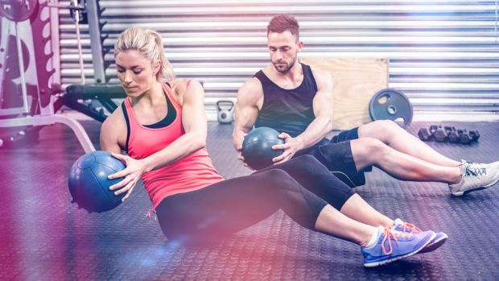

ABS EXERCISES
Mountain climber

“Start in a straight arm press-up position with one knee up between your elbows and only the back foot on the floor,” says Chamberlain. “Jump the back foot off the floor and swap it with the front foot.
“Focus on pulling your stomach muscles in throughout the movement to protect your spine and add more intensity. This is a great exercise for burning calories as well as developing your abs. Start with 30 seconds of mountain climbers and work towards 60 seconds.”
Reverse crunch
The reverse crunch is even better than the standard crunch for strengthening your abs. The move keeps your muscles under tension for a longer period and hits the tricky-to-target lower abs particularly hard.
Lie down and raise your legs so your thighs are vertical and your knees are bent at a 90° angle. Contract your abs to bring your knees to your chest and raise your hips off the floor, then slowly lower your legs back to the start.
Grounded Russian twist

It’s worth mastering the basic version of this exercise because it hits the oft-neglected obliques and often fitness classes throw people in at the deep end with more difficult variations. Sit on the floor with your knees bent and heels resting on the ground. Lean back so that your torso is at 45°. Keep your chest up to stop you from hunching your back. Interlock your fingers and extend your arms in front of you. Turn your torso to the left or right, bringing your hands to touch the ground on that side. Rotate back to centre and then carry on to touch the opposite side. Once you’ve mastered the movement, make it more difficult by raising your heels off the floor and/or holding a weight.
Dead bug
The dead bug is a fine choice for beginners because it goes easy on your neck and back, which can’t be said for other abs exercises when they’re done incorrectly.
Lie on your back with your arms extended to the ceiling. Raise your legs and bend your knees until they’re at 90°. Lower your left arm towards the ground and simultaneously extend your right leg so both limbs end up parallel to the ground. Reverse the movements, then repeat with the other arm and leg. Focus on making your movements slow and controlled, spending three seconds lowering and three seconds raising. Work for 30 to 60 seconds, or three sets of five reps on each side.
Leg raise
Lie down flat on your back on the ground. Keeping your legs as straight as possible, raise them until they’re vertical or as close as you can get. Lower them and repeat.
“This engages your lower abs, and you engage your core by flattening your lower back on the floor,” says Chamberlain.
“To make it easier, tuck your knees in and start with your legs raised, then slowly lower them towards the floor. Once you master this, start keeping your legs straight when returning to the top position.
“If you feel a niggle in your lower back then place your hands under your buttocks to help keep your lower back flat. Start with sets of five raises and work towards 15.”